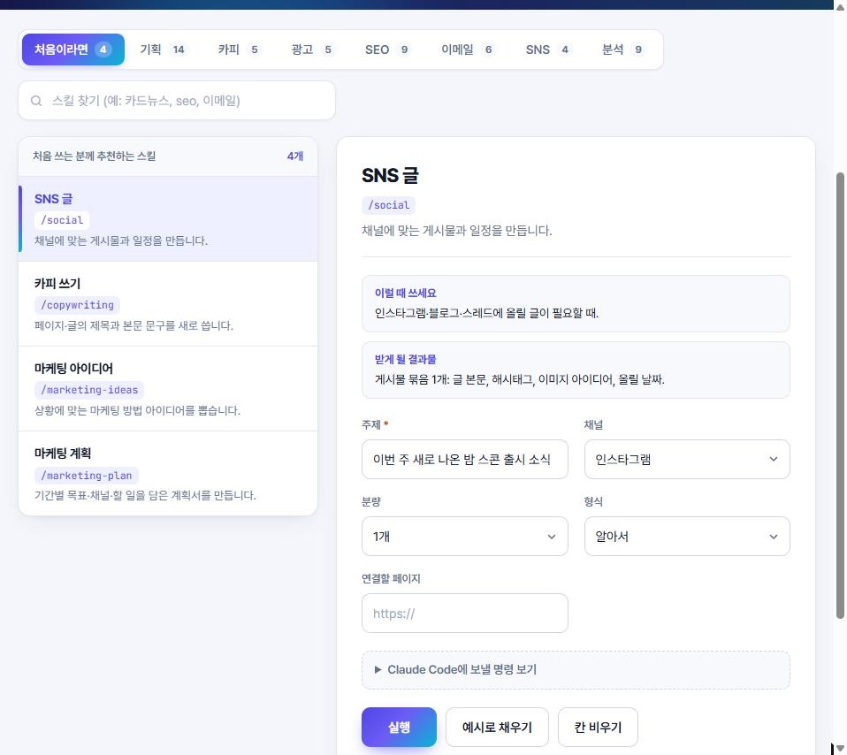
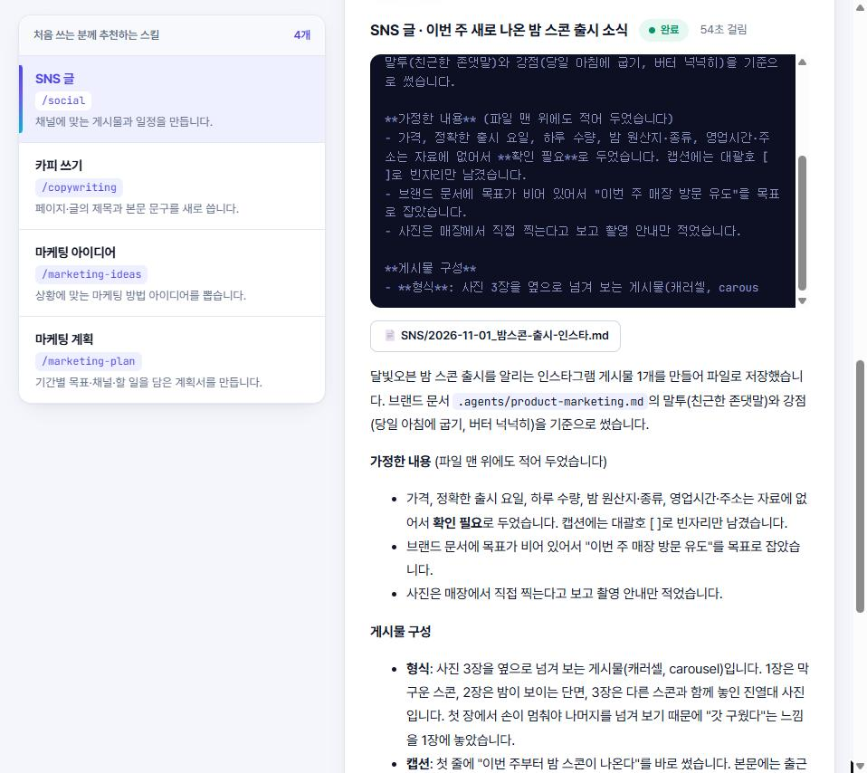

무엇을 하는 프로그램인가요
마케팅 글을 쓸 때마다 무엇을 어떻게 물어봐야 할지 고민하셨다면, 그 질문을 미리 만들어 둔 화면입니다.
하고 싶은 일을 고릅니다
예: "인스타그램 글 쓰기"
칸 몇 개를 채웁니다
예: "이번 주 신메뉴, 밤 스콘"
[실행]을 누릅니다
결과 파일이
문서/마케팅작업실폴더에 생깁니다. 시험에서 인스타그램 글 한 편은 약 1분. 계획·점검처럼 긴 작업은 더 걸립니다.
처음 한 번 내 사업 정보(업종, 지역, 손님, 말투 등)를 적어 두면, 모든 작업이 그 내용을 기준으로 씁니다. 매번 우리 가게 설명을 다시 할 필요가 없습니다.
처음이라면 이 네 가지부터
| 작업 | 이럴 때 |
|---|---|
| SNS 글 | 인스타그램·블로그에 올릴 글이 필요할 때 |
| 카피 쓰기 | 전단지·홈페이지·상세페이지 문구가 필요할 때 |
| 마케팅 아이디어 | 무엇부터 해야 할지 모를 때 |
| 마케팅 계획 | 한 달·한 분기 홍보 순서를 정하고 싶을 때 |
그 밖에 광고 문구, 이메일, 네이버 블로그 검색 점검, 가격 정하기, 경쟁 가게 정리 등 모두 52가지가 들어 있습니다.
실제 화면과 결과물
아래는 시험용 가상 카페 "달빛오븐"으로 실제로 실행한 모습입니다. 실제 가게가 아닙니다.





사진을 누르면 크게 볼 수 있습니다.
이번 주부터 달빛오븐 진열대에 밤 스콘이 올라갑니다.
날이 쌀쌀해지면서 가을 메뉴를 하나 꼭 내고 싶었어요. 플레인 스콘 반죽에 밤을 넣어 구웠고, 다른 스콘처럼 버터를 넉넉히 쓰고 매일 아침 그날 팔 만큼 굽습니다. 반으로 갈라 보시면 밤이 보여요.
가격: [확인 필요]
판매 시작: [이번 주 O요일, 확인 필요]
수량: [하루 O개 한정 여부, 확인 필요]
비용
이플립은 사용료를 따로 받지 않습니다. 작업을 실행할 때마다 내 Claude 구독의 사용량이 조금씩 줄어드는 구조입니다.
명령판 프로그램
무료
설치·업데이트 모두 무료입니다.
Claude 사용료
내 Claude 계정
Pro 이상 유료 구독 또는 API 키가 필요합니다. 무료 플랜으로는 실행되지 않습니다.
Claude 요금제는 Anthropic 공식 요금 페이지에서 확인하세요.
설치는 세 단계
관리자 권한 없이 설치됩니다. 처음 켜면 "시작 준비" 화면이 Claude Code 설치와 로그인이 됐는지 확인하고, 안 된 것이 있으면 무엇을 하면 되는지 알려 줍니다.
Windows
- 내려받은 zip 파일을 오른쪽 클릭해 압축 풀기
- 풀린 폴더에서
install-windows.cmd더블클릭"Windows의 PC 보호" 창이 뜨면 추가 정보 → 실행 - 브라우저에 명령판이 열립니다. 다음부터는 바탕화면 아이콘을 누르세요
Mac 아직 시험 중
- 같은 zip 파일을 더블클릭해 압축을 풉니다
install-mac.command를 오른쪽 클릭 → 열기"열 수 없음" 창만 뜨면 시스템 설정 → 개인정보 보호 및 보안 맨 아래 "그래도 열기"- 브라우저에 명령판이 열립니다
알아 두실 것
- 관리자 권한이 필요 없습니다.PC 설정을 바꾸지 않고, 원래 쓰던 Claude 설정도 건드리지 않습니다.
- 결과물과 사업 정보는 내 PC에 파일로 남습니다.
문서/마케팅작업실폴더에 저장됩니다. 글을 만드는 동안 입력한 내용은 Claude(Anthropic)로 보내져 처리됩니다. - 새 버전은 화면 위쪽 알림으로 알려 드립니다.[지금 업데이트]를 누르면 1~3분 뒤 새 버전으로 다시 열리고, 사업 정보와 결과물은 그대로입니다.
- 휴대폰에서도 쓸 수 있습니다 (선택).PC가 켜져 있으면 Tailscale 앱으로 내 휴대폰에서 열 수 있습니다. 방법은 프로그램 안 "시작 준비" 화면에 있습니다.
- 지워도 결과물은 남습니다.프로그램 폴더의
uninstall.cmd로 지우면 프로그램만 사라집니다.
자주 묻는 질문
정말 무료인가요?
명령판은 무료입니다. 글을 만드는 Claude는 본인 계정의 유료 구독(Pro 이상)이나 API 키로 돌아갑니다.
코딩을 전혀 몰라도 되나요?
설치는 파일 더블클릭으로 끝나고, 쓰는 동안에는 칸을 채우고 버튼을 누릅니다. 단, Claude Code를 처음 설치할 때 명령 한 줄을 붙여 넣는 단계가 한 번 있습니다. 시작 준비 화면이 그 한 줄을 그대로 보여 줍니다.
만들어진 글을 그대로 올려도 되나요?
꼭 읽어 보고 고쳐서 쓰세요. 숫자·후기처럼 근거가 없는 내용은 [확인 필요]로 표시되지만, 최종 확인은 쓰는 분의 몫입니다.
Mac에서도 되나요?
설치 파일은 들어 있지만 아직 실제 Mac에서 시험을 마치지 못했습니다. 써 보시고 막히는 곳을 알려 주시면 고치겠습니다.
가게가 두 개면요?
사업 정보를 브랜드별로 따로 저장하고, 실행할 때 골라 쓸 수 있습니다.
막히면 어디에 물어보나요?
이플립 솔루션 문의 페이지로 연락 주세요. 업데이트가 안 될 때는 프로그램 폴더의 app/logs/update.log 파일을 함께 보내 주시면 빨리 찾을 수 있습니다.
우리 가게에 맞게 쓰는 법이 궁금하다면
이플립은 이 명령판으로 소상공인·강사·기관 대상 생성형 AI 마케팅 강의를 하고, 업무에 맞춘 도구도 만들어 드립니다.